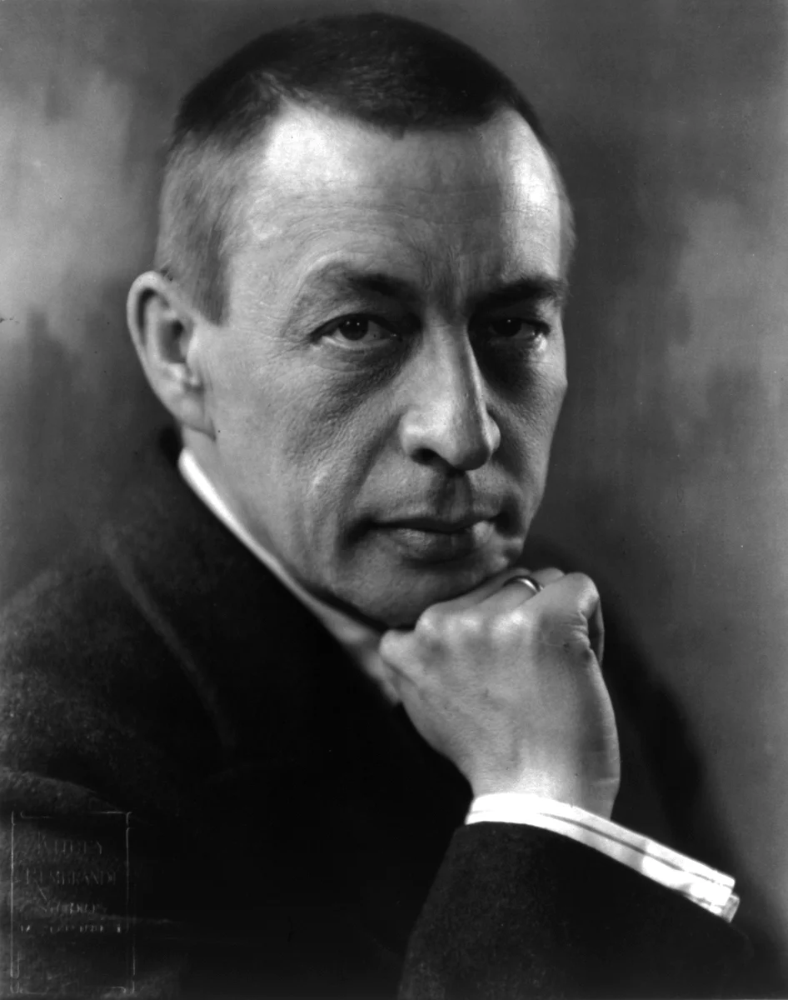
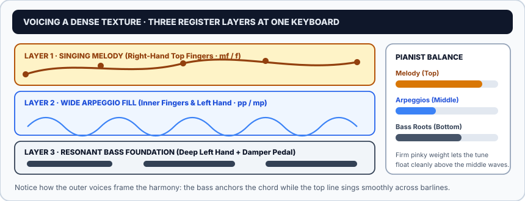

Music pioneer · Romantic · Composer arrangement studio
Sergei Rachmaninoff
Choose one of six complete preludes to read, play, slow down, loop, or arrange. Start with a few measures: these are advanced piano works, and a melody-only arrangement is a useful first step. Open the player’s study guide for prompts throughout each score.
Arranging with care
A source staff is not always the melody: in an orchestral score, find the staff carrying the theme. A two-part piano study pairs your selected voice with a source bass; it is not a concert reduction and wide leaps may need redistribution. Saxophone notation is transposed while playback stays at concert pitch. Violin parts stay at concert pitch and are moved by octaves to sit above the open G string. Guitar tab preserves pitch and rhythm but may need a different octave or fingering. Original ensembles are available only where the source contains those parts. Piano reductions and original classroom studies retain their source identities.
Recordings: Nicholaus P. Brosowsky’s Tonejs-Instruments sample collection, CC BY 3.0; VSCO 2 Community Edition, CC0. Sample credits and processing.
Music pioneer · Late Romantic · 1873–1943
About Sergei Rachmaninoff

Sergei Rachmaninoff (1873–1943) was a Russian composer, virtuoso pianist, and conductor famed for long singing melodies supported by richly layered keyboard textures. His preludes and concertos bridge late Romantic lyricism with twentieth-century concert stages.
Music pioneer · Romantic
Sound experiment: melody above a wide accompaniment
Hear a melody alone, then above broken chords. Keep your attention on the upper line as the texture fills out.
This is an original classroom demonstration of a musical idea, not an excerpt or recording of the composer’s work.
Choose a version, then press Play.
Life and context
Sergei Rachmaninoff (1873–1943).
Rachmaninoff was a Russian composer, pianist, and conductor whose career extended into the twentieth century. After leaving Russia in 1917, he built an international performing career while continuing to compose.
Sergei Rachmaninoff: a timeline
- Born on 1 April at Semyonovo in northwestern Russia.
- Graduates from the Moscow Conservatory and writes the famous Prelude in C-sharp minor, Op. 3 No. 2.
- Premieres the Piano Concerto No. 2 in C minor after overcoming years of self-doubt.
- Completes the Ten Preludes, Op. 23, showcasing wide-spanning left-hand textures.
- Publishes the Thirteen Preludes, Op. 32, completing preludes in all 24 major and minor keys.
- Leaves Russia following the Revolution and settles in the United States as a touring pianist.
- Composes Rhapsody on a Theme of Paganini in Switzerland.
- Completes his final major work, the Symphonic Dances, Op. 45.
- Dies in Beverly Hills, California, on 28 March.
Melody above a wide accompaniment
His music often places a long, singing melody above a rich accompaniment. A pianist must balance these layers so a melody remains clear even when the keyboard texture is dense.

Guided listening
Choose a performance of one of these works. Listen once for its overall character, then again for the detail in the prompt.
- Piano Concerto No. 2: notice how the piano and orchestra share melodic material.
- Vocalise: follow a wordless vocal line and its long phrases.
- Symphonic Dances: compare orchestral color with the sound of his piano music.
LA Phil: Sergei Rachmaninoff — biography and related performances
Practice and reflection
- Choose two preludes in the Sheet music studio. Compare the bell-like C-sharp-minor opening, the G-minor march, and the singing D-major or E-flat-major melodies. Use the study guide to explore a short passage.
- Play both sound examples. Describe one feature that changes and one that stays the same.
- How could a pianist make a melody audible without simply playing every note louder?
- Create a four-note idea at the piano. Make two versions using today’s musical idea, then explain your choices to a partner.
Check your listening
Hear a melody alone, then above broken chords. Keep your attention on the upper line as the texture fills out. A useful answer names a feature you can hear and explains its effect. More than one interpretation is possible.
Copy your notes before leaving this page; they are not saved.